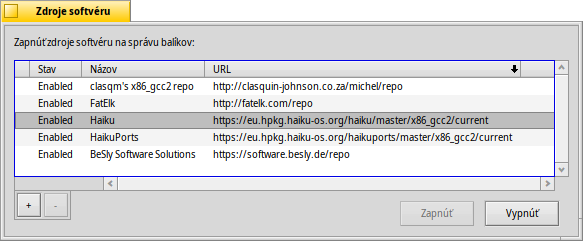

Zdroje softvéru
Zdroje softvéru
| Panel: | ||
| Umiestnenie: | /boot/system/preferences/Repositories | |
| Nastavenia: | ~/config/settings/Repositories_settings |
Zdroje softvéru sú kolekcie balíkov softvéru. Štandardne nastavený je zdrojo softvéru Haiku so všetkými balíkmi operačného systému a HaikuPorts, ktorý poskytuje veľké množstvo portovaných aplikácií a natívneho softvéru pre Haiku. Existuje niekoľko ďalších zdrojov softvéru, ktoré spravujú členovia komunity Haiku. Pozrite sa na webovej stránke na Webstránky so softvérom.
Toto je panel nastavení na správu vašich zdrojov softvéru (môžete ho tiež otvoriť z menu v HaikuDepot):
The first column in the list of known repositories shows if a repo is currently enabled. If it isn't, it will not be queried by HaikuDepot or pkgman from the command line. Use the buttons to or the selected repositories, or double-click a repo to toggle the status.
V závislosti od veľkosti zdroja softvéru a rýchlosti vášho pripojenia k internetu môže zapnutie zdroja softvéru niekoľko sekúnd trvať. Ak trvá dlhšie, budete informovaný o čakajúcich úlohách v malom textovom poli nad tlačidlami . Ak úloha trvá neobvykle dlho, budete požiadaní o jej ukončenie alebo vyvolanie opätovného pokusu.
Zdroj softvéru môže úplne odobrať tlačidlom „“ button, it has to be disabled.
Nový zdrojo softvéru môžete pridať tlačidlom „“, ktoré otvorí tento panel:
Nový repozitár pridáte vložením odkazu URL do textového poľa. Než ho zapnete, jeho názov bude „Neznámy“.